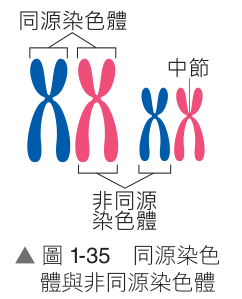

1-3.1 染色體與染色質（一）
焦點：染色體的發現歷史、真核細胞染色體化學組成與形態
💡 單元前導思維： 細胞分裂進行時，染色體的變化最為關鍵，因為染色體必須平均分配給子細胞，才能確保親代的遺傳訊息得以延續給子代。究竟，細胞分裂的過程中染色體有什麼變化呢？
一、染色體的發現
1. 發現的科學家： 德國生物學家 弗萊明 （Walther Flemming）。
2. 發現歷程： 1879 年，弗萊明利用特殊染劑將動物胚胎細胞染色，發現細胞分裂時細胞核內有絲狀物出現。
3. 命名： 這些容易被鹼性染劑染色的絲狀物後來被稱為 染色體 （Chromosome）。
二、真核細胞的染色體
1. 所在位置： 真核細胞的 細胞核 內。
2. 化學組成： 主要由 DNA 和 蛋白質 （主要是組蛋白）共同組成。
3. 存在形態的轉變：
(1) 非細胞分裂期（間期）： 細絲狀的 DNA 纏繞在蛋白質周圍，呈現鬆散細長絲狀，此時稱為 染色質 （Chromatin）。便於進行基因轉錄與複製。
(2) 細胞分裂期： 染色質會高度螺旋化，更加緊密纏繞成粗棒短絲狀，此時稱為 染色體 （Chromosome）。便於在分裂時精確平均分配。
💡 延伸補充：原核生物的細胞分裂
細菌等原核生物沒有細胞核膜，其遺傳物質為單一環狀 DNA 分子（不含組蛋白），進行繁殖時係利用「二分裂法（Binary fission）」 直接向內凹陷分裂，分裂過程中並不會出現由紡錘絲牽引的「絲狀染色體」。
1-3.1 染色體與染色質（二）
焦點：染色體複製與形態變化、中節與著絲點、同源染色體特性
4. 染色體的形態變化歷程
細胞分裂前（間期），染色質進行 複製 形成雙份 DNA；進入分裂期時，複製後的染色質緊密纏繞，形成由中節相連的兩條 姊妹染色分體 （此結構稱為二分體 ）。
5. 染色體的細部構造
(1) 中節（著絲粒，Centromere）： 染色體上較狹窄凹陷的區域，為姊妹染色分體互相緊密連接處。
(2) 著絲點（Kinetochore）： 中節外側能與 紡錘絲 結合的特殊蛋白質複合體，引導染色體移動與分離。
(3) 中節與著絲點不一定位在染色體中央正中，故染色體的長臂與短臂不一定等長。
6. 染色體的基本特性與同源染色體
(1) 物種恆定性： 每種生物體細胞內各有其一定的染色體數目。例如：人類體細胞有 23 對 （46 條）；黑猩猩有 24 對（48 條）；果蠅有 4 對（8 條）。
(2) 同源染色體（Homologous chromosomes）：
① 真核體細胞中的染色體大多成對存在，凡大小、形狀相同，且相對位置具有控制同種性狀對應等位基因的一對染色體，稱為 同源染色體 。
② 成對的同源染色體中，其中一條來自父方 （經精子傳遞），另一條來自母方 （經卵細胞傳遞）。
細胞種類
染色體條數
成對狀態
倍數（套數）
體細胞 46 條
同源染色體成對出現
二倍數（2n，雙套）
生殖細胞（配子） 23 條
不成對（僅含每對中之一條）
單倍數（n，單套）

▲ 圖 1-35 同源與非同源
1-3.1 染色體與染色質（三）
焦點：同源染色體 vs 姊妹染色分體、二倍數與單倍數、世代傳遞模式
三、染色體的關鍵名詞比較
1. 同源染色體 vs 姊妹染色分體：
名稱
同源染色體（Homologous Chromosomes）
姊妹染色分體（Sister Chromatids）
形態特徵 形狀大小相似的一對染色體，可進行配對聯會
同一條染色體複製後以中節相連的左右兩半條
來源與遺傳 一條來自父方 ，一條來自母方 ；基因組合不完全相同
來自同一親代同一模板 DNA 的半保留複製；遺傳訊息完全相同
分離時期 發生於 減數分裂第一階段（I） 後期
發生於 有絲分裂 及 減數分裂第二階段（II）
2. 染色體倍數（套數）的定義比較
3. 人類世代交替染色體數目恆定機制（圖 1-36）
1-3.1 隨堂實戰評量
基礎練習題組（染色體組成、型態轉變與同源染色體辨識）
基礎練習（點擊題號可展開答案與詳細解析）
（ B ）
1. 下列何者為人類染色體的成分？
(A) DNA＋RNA
(B) DNA＋蛋白質
(C) 只有蛋白質
(D) 只有 DNA
💡 解析展開：
真核細胞（如人類細胞）的染色質與染色體，化學成分主要由「去氧核糖核酸（DNA）」與「蛋白質（主要是富含鹼性胺基酸的組蛋白 Histone）」共同組成，DNA 纏繞在組蛋白八聚體上形成核小體構造。故正確選項為 (B)。
（ C ）
2. 下列有關細胞內染色質與染色體的敘述，何者錯誤？
(A) 染色體為細胞在分裂時觀察到的絲狀物
(B) 體細胞內同源染色體皆為成對出現
(C) 細絲狀的染色質在細胞進行分裂時會緊密地纏繞，形成粗絲狀的染色質
(D) 染色體內的蛋白質可協助 DNA 的纏繞
💡 解析展開：
(C) 錯誤，在非分裂期（間期）呈現細長鬆散狀的稱為「染色質」；而在細胞進行分裂時，染色質會經高度螺旋化而緊密纏繞，形成粗棒短絲狀的構造，此時應稱為「染色體」而非染色質。
（ C ）
3. 某生物有 4 條染色體（如附圖），分別以甲、乙、丙、丁表示，下列哪一選項中的染色體可能互為同源染色體？
(A) 甲、乙
(B) 丙、丁
(C) 甲、丁
(D) 乙、丁
💡 解析展開：
「同源染色體」的定義為成對且大小、長度與外觀形狀相同的一對染色體。由附圖觀察可知：
1-3.2 細胞週期與有絲分裂（一）
焦點：細胞週期定義意義、不同細胞的分裂特性、間期與分裂期
一、細胞週期（Cell Cycle）
1. 定義： 具有分裂能力的細胞，由母細胞分裂形成後，經生長、複製到再分裂為兩個子細胞的完整生命週期過程。
2. 意義： 產生更多遺傳物質相同的細胞，以提供生物體的生長發育、組織修復與無性繁殖。
2. 生物體內不同細胞的細胞週期差異
(1) 持續分裂的細胞： 終生維持高度分裂能力，例如植物根尖與莖頂的形成層、生長點細胞，以及人體表皮基底層幹細胞、骨髓造血幹細胞。
(2) 依需求分裂的細胞： 平時處於靜止期（G₀期），受到損傷或特殊生長因子刺激時才重啟分裂，例如人體肝臟幹細胞在受損切除時會迅速分裂再生。
(3) 高度分化不再分裂的細胞： 完全分化成熟後即永久退出細胞週期，不再進行分裂，例如高度特化的人體成熟神經元、骨骼肌纖維細胞。
3. 細胞週期的分期（圖 1-37）
細胞週期主要劃分為 間期 與 分裂期（M期） 兩大階段：
(1) 間期（Interphase） ：DNA（染色質）複製 ，為分裂做好充份準備。90% 以上時間。
(2) 分裂期（Mitotic phase，M期） ：細胞核分裂（有絲分裂） 與細胞質分裂 兩大連續事件。10% 的短暫時間。
1-3.2 細胞週期與有絲分裂（二）
焦點：有絲分裂目的意義、動物細胞有絲分裂各期特徵（核裂與質裂）
二、有絲分裂與細胞質分裂
1. 目的與意義： 母細胞分裂為 2 個染色體數目、套數與母細胞完全相同的子細胞（2n → 2n），維持遺傳物質的穩定延續性。
2. 複製與分裂次數： 染色體（DNA）複製 1 次 ，細胞 分裂 1 次 。
3. 分裂階段詳細特徵（以動物細胞為例）
階段
關鍵生化特徵與細胞形態轉變
間期
DNA 完成複製（仍呈鬆散染色質），中心粒複製，核膜與核仁清楚可見。
核分裂：前期
染色質緊密纏繞縮短，出現二分體染色體；核膜、核仁逐漸解體消失；兩組中心粒向兩極移動並釋出紡錘絲。
核分裂：中期
紡錘絲附著於染色體中節著絲點，牽引所有染色體排列在細胞中央的赤道板 上（此期染色體形態最清晰）。
核分裂：後期
著絲點分裂，紡錘絲牽引姊妹染色分體分離 成兩條獨立染色體，分別移向細胞兩極。
末期與質裂
染色體到達兩極並鬆散為染色質，核膜核仁重新形成，紡錘絲解體消失。動物細胞中央質膜向內凹陷形成分裂溝 ，縊裂為 2 個子細胞。
1-3.2 細胞週期與有絲分裂（三）
焦點：動植物細胞分裂差異 & 1-3.2 隨堂實戰評量
三、動、植物細胞在細胞分裂上的關鍵差異
1. 中心粒的有無： 動物細胞具有中心粒協助紡錘體形成；高等植物細胞 一般不具中心粒 ，但細胞分裂時兩極仍會發出微管形成紡錘絲。
2. 細胞質分裂方式：
(1) 動物細胞： 由微絲組成的收縮環牽引，使細胞中央細胞膜向內凹陷形成 分裂溝 ，最終由外向內縊裂分開。
(2) 植物細胞： 因具堅硬細胞壁無法向內凹陷，由高基氏體囊泡在細胞中央融合聚集形成 細胞板 ，由內向外延伸形成新的細胞膜與細胞壁。
基礎練習（點選題號開合整題答案與詳細解析）
（ C ）
1. 下列何種情形下，生物體會進行有絲分裂？
(A) 睪丸產生精子
(B) 細菌的增殖
(C) 血球母細胞產生紅血球
(D) 卵巢產生卵細胞
💡 解析展開：
有絲分裂是真核生物用以產生「體細胞」以進行增殖、生長與組織修復的機制，(C)造血母細胞分裂產生紅血球為體細胞增殖，屬於有絲分裂；(A)與(D)產生生殖細胞（精子、卵細胞）必須進行「減數分裂」；(B)細菌等原核生物是以「二分裂法」進行增殖。
（ A ）
2. 植物細胞的有絲分裂會發生下列何種現象？
(A) 複製的染色分體分離
(B) 細胞中央部位向內凹陷
(C) 中心粒向兩側移動
(D) 同源染色體分離
💡 解析展開：
(A) 有絲分裂後期，著絲點斷裂，複製的姊妹染色分體分離並移向兩極，此現象在動植物皆會發生；(B) 植物細胞具有細胞壁，質裂時係形成細胞板，不會向內凹陷；(C) 高等植物細胞不具中心粒；(D) 同源染色體分離只發生於減數分裂 I。故選 (A)。
（ C ）
3. (甲)染色體排列於紡錘體中央；(乙)細胞中央向內凹陷；(丙)染色體複製產生兩條染色分體；(丁)中心粒分裂為二，向細胞兩端移動。關於有絲分裂的順序何者正確？
(A) 甲乙丙丁
(B) 丙甲丁乙
(C) 丙丁甲乙
(D) 甲丁乙丙
💡 解析展開：
有絲分裂及相關週期的正確先後順序為：(丙)間期染色體複製形成雙染色分體 → (丁)前期中心粒複製分開並向兩極移動釋出紡錘絲 → (甲)中期染色體排列於赤道板中央 → 後期分離後進入 (乙)末期與細胞質分裂，細胞膜向內凹陷縊裂。故順序為 (丙)(丁)(甲)(乙)。
1-3.3 減數分裂與配子形成（一）
焦點：減數分裂特性意義、聯會四分體、減數分裂兩階段歷程
一、減數分裂（Meiosis）的特性與意義
1. 特性： 生殖母細胞產生配子時，染色體 複製 1 次 ，細胞 連續分裂 2 次 ，每個配子的染色體數目僅有母細胞的一半（2n → n）。
2. 演化意義：
(1) 配子染色體數目減半為單倍體（n），受精後恢復為二倍體（2n），確保物種代代相傳染色體套數維持恆定 。
(2) 減數分裂時非同源染色體自由組合及基因重組，可產生多樣化基因組合的配子，增加遺傳多樣性以利物種演化 。
3. 二分體與四分體的形態差異
4. 減數分裂兩階段歷程（以動物細胞為例）
分期
減數分裂第一階段（減數分裂 Ⅰ）
減數分裂第二階段（減數分裂 Ⅱ）
前期特徵 同源染色體成對並排緊密靠攏，稱為 聯會 ，形成 四分體
染色質不再複製，核膜再度消失，紡錘絲出現
中期特徵 四分體成對排列在赤道板中央
各二分體獨立排列在赤道板中央
後期特徵 同源染色體分離 著絲點分裂，姊妹染色分體分離
染色體倍數 2n → n （同源分開，套數減半）n → n （分體分開，倍數不變）
1-3.3 減數分裂與配子形成（二）
焦點：有絲分裂 vs 減數分裂全方位綜合深度對照比較
二、有絲分裂與減數分裂綜合比較大表
比較項目
有絲分裂（Mitosis）
減數分裂（Meiosis）
細胞分裂目的 體細胞增殖、生長發育、組織修復
產生生殖細胞（配子 / 孢子）
染色體複製次數 1 次 （於分裂前的間期）1 次 （於減數分裂 Ⅰ 前之問期）
細胞分裂次數 1 次 連續 2 次 （減數分裂 Ⅰ 與 Ⅱ）
同源染色體配對(聯會) 無 配對聯會現象有 （發生於減數分裂 Ⅰ 前期，形成四分體）
同源染色體分離 無 （同源不分離）有 （發生於減數分裂 Ⅰ 後期）
姊妹染色分體分離 有 （後期著絲點分裂）有 （發生於減數分裂 Ⅱ 後期）
產生子細胞數目 產生 2 個 子細胞
產生 4 個 子細胞
染色體倍數（套數）變化 2n → 2n （倍數維持不變）2n → n （套數減半）
⚡ 大考關鍵破題秘訣：
● 只要看到「同源染色體成對排列在中央」 或「同源染色體分開」 ，必為 減數分裂 Ⅰ ！「無同源成對」且單列排中央、著絲點分開 ，若細胞內為單套 (n) 則為 減數分裂 Ⅱ ；若細胞內為雙套 (2n) 則為 有絲分裂 。
1-3.3 減數分裂與配子形成（三）
焦點：精子形成 vs 卵細胞形成、極體功能與 1-3.3 隨堂評量
三、人體配子的形成與比較
1. 精子形成（Spermatogenesis）： 精原細胞(2n) ➔ 初級精母細胞(2n) ➔ 次級精母細胞(n) ➔ 精細胞(n) ➔ 變態特化為 4 個具鞭毛的精子(n) 。質均等分裂。
2. 卵細胞形成（Oogenesis）： 卵原細胞(2n) ➔ 初級卵母細胞(2n) ➔ 次級卵母細胞(n)＋第1極體 ➔ 1 個成熟卵細胞(n) ＋第2極體。細胞質高度不均等分裂 ，確保卵細胞儲備充沛養分以供胚胎發育；極體隨後退化。
基礎練習（點選題號開合整題答案與詳細解析）
（ A ）
1. 下列何敘述只會出現在動物精子形成的過程中，而不會出現在動物皮膚細胞的增生？
(A) 同源染色體的分離
(B) 姊妹染色體的分離
(C) DNA 的複製
(D) 中心體的複製
💡 解析展開：
皮膚細胞增生為「有絲分裂」，精子形成為「減數分裂」。(B)姊妹染色分體分離、(C)DNA複製與(D)中心體複製在有絲分裂與減數分裂兩者皆會發生；唯獨「同源染色體聯會配對與分離」專屬於減數分裂 Ⅰ。故選 (A)。
（ C ）
2. 下列有關細胞分裂的比較，何者正確？
選項 比較項目 有絲分裂 減數分裂 (A) 染色體複製 有，一次 有，二次 (B) 子細胞數量 4 個 4 個 (C) 姊妹染色體的分離 有 有 (D) 染色體倍數變化 2n → 2n n → 2n
💡 解析展開：
(A) 減數分裂染色體只複製 1 次；(B) 有絲分裂產生 2 個子細胞；(D) 減數分裂倍數變化為 2n → n；(C) 兩者皆會發生姊妹染色分體分離（有絲分裂後期、減數分裂 Ⅱ 後期），故 (C) 正確。
（ A ）
3. 下列何項敘述為減數分裂對多數生物體的主要意義？
(A) 可維持子代的染色體倍數固定
(B) 分裂產生的細胞皆可生長成獨立個體
(C) 可產生和母細胞染色體倍數相同的配子
(D) 降低子細胞的染色體數目
💡 解析展開：
減數分裂使配子染色體減半為 n，雌雄配子受精結合後使受精卵恢復為 2n，從而確保物種「子代與親代的染色體倍數代代維持固定恆定」，避免倍數逐代倍增。故正確為 (A)。
1-3.4 受精卵的發育與細胞分化
焦點：受精染色體數目恢復、細胞分化意義與 1-3.4 隨堂評量
一、染色體數目與發育過程
1. 受精過程染色體數目的變化： 人體生殖母細胞經減數分裂產生的精子(23條)與卵細胞(23條)皆為單倍數(n)，受精結合後形成受精卵，即恢復為 二倍數的 46 條染色體（2n） 。
2. 後代染色體數目的維持與細胞分化
(1) 有絲分裂增殖： 單一受精卵經無數次有絲分裂增生，所產生的所有體細胞均帶有完全相同 的成對染色體與遺傳密碼。
(2) 細胞分化（Cell Differentiation）： 原本基因完全相同的體細胞，在發育過程中因「基因選擇性表現」，形成不同形態構造與專一機能的細胞（如上皮細胞、肌肉細胞、神經細胞、紅血球、骨細胞等），進而構築組織、器官與系統。
(3) 生殖母細胞傳承： 個體發育成熟後，性腺內的生殖母細胞可再次進行減數分裂產生配子，代代相傳使染色體數目維持恆定。
基礎練習（點選題號開合答案與解析）
（ D ）
1. 有關細胞分化的敘述，何者正確？
(A) 生物經分化後，會產生相同形態和功能的細胞
(B) 同一個體的不同細胞，其所含的基因都不相同
(C) 對多細胞生物而言，分化不能算是生長
(D) 分化程度愈高的生物，其細胞間的協調就愈重要
💡 解析展開：
(A) 分化會產生「形態構造與生理功能相異」的特化細胞；(B) 同一個體的所有體細胞皆源自同一受精卵的有絲分裂，因此各細胞核內所攜帶的基因組完全相同，差異源自基因的選擇性表現；(C) 對多細胞生物而言，個體由受精卵長成成體包含「細胞分裂（數目增加）」、「細胞生長（體積增大）」與「細胞分化（功能特化）」，三者皆屬於生長發育的一環；(D) 正確，細胞功能愈高度特化，各細胞各司其職，彼此間的神經與激素協調調控就愈不可或缺。故選 (D)。
課後實戰演練 · 單選題（一）
減數分裂特徵與核型分析題組（第 1～4 題）
一、單選題（點選題號開合整題答案與詳細解析）
（ D ）
1. 下列哪一過程需進行減數分裂？
(A) 受精卵的分裂
(B) 細胞的分化
(C) 皮膚細胞的增生
(D) 生殖細胞形成時
💡 解析展開：
(D) 只有生殖母細胞在產生單倍體生殖細胞（精子、卵）時，需要進行減數分裂以使染色體套數減半；(A)受精卵卵裂、(B)分化過程增殖與(C)皮膚細胞修復增生，皆為維持染色體數目不變的「有絲分裂」。故選 (D)。
（ A ）
2. 在減數分裂過程中，同源染色體的分離與姊妹染色分體的分離各發生於何時？
(A) 前者發生於減數分裂 Ⅰ，後者發生於減數分裂 Ⅱ
(B) 前者發生於減數分裂 Ⅱ，後者發生於減數分裂 Ⅰ
(C) 兩者均發生於減數分裂 Ⅰ
(D) 兩者均發生於減數分裂 Ⅱ
💡 解析展開：
減數分裂分為兩階段：第一階段（減數分裂 Ⅰ）後期進行「同源染色體分離」，導致染色體倍數減半（2n → n）；第二階段（減數分裂 Ⅱ）後期著絲點分裂，進行「姊妹染色分體分離」，染色體倍數維持不變（n → n）。故正確選項為 (A)。
（ A ）
3. 人體哪一個細胞染色體最不可能為「22 ＋ X」？
(A) 女性的初級卵母細胞
(B) 女性的次級卵母細胞
(C) 女性的卵
(D) 男性的精子
💡 解析展開：
「22 條體染色體 ＋ 1 條 X 染色體」代表的是總數 23 條的「單倍數（n）」細胞！(A)女性初級卵母細胞剛完成 DNA 複製，仍處於「雙倍體二分體狀態（44 ＋ XX，總數 46 條）」，尚未完成同源染色體分離，絕不可能為單套 22＋X；(B)次級卵母細胞(n=22+X)、(C)卵細胞(n=22+X)、(D)攜帶X的精子(n=22+X)皆為單倍數。故選 (A)。
（ B ）
4. 下列有關減數分裂的敘述，何者正確？
(A) 減數分裂時僅發生性染色體的分離
(B) 減數分裂時會發生性染色體的分離與體染色體的分離
(C) 姊妹染色分體在減數分裂 Ⅰ 時相互分離
(D) 減數分裂 Ⅱ 產生的子細胞含成對的同源染色體
💡 解析展開：
(B) 正確，在減數分裂 Ⅰ 後期，所有 22 對體染色體與 1 對性染色體均會進行同源染色體分離；(A)體染色體與性染色體皆會分離；(C)姊妹染色分體是在減數分裂 Ⅱ 後期分離；(D)減數分裂 Ⅰ 即已將同源染色體拆開，減數分裂 Ⅱ 所產生的配子子細胞皆為單倍數（n），不具有成對同源染色體。故選 (B)。
課後實戰演練 · 單選題（二）
倍數變化、動植物差異與分裂週期比較（第 5～7 題）
一、單選題（續）
（ B ）
5. 下列何者最能表示減數分裂的過程中染色體倍數的變化？（母細胞的染色體倍數 → 完成減數分裂 Ⅰ 之細胞的染色體倍數 → 完成減數分裂 Ⅱ 之細胞的染色體倍數）
(A) 2n → 2n → n
(B) 2n → n → n
(C) n → n → n
(D) 2n → n → 2n
💡 解析展開：
生殖母細胞最初為雙倍體（2n）；減數分裂 Ⅰ 後期同源染色體分離，產生的次級母細胞中同源染色體已不再成對，套數減半為單倍體（n）；減數分裂 Ⅱ 進行的是姊妹染色分體的分離，子細胞染色體套數維持不變（n）。因此全程套數變化為 2n → n → n ，正確選項為 (B)。
（ B ）
6. 下列何者為動、植物細胞有絲分裂的差異？
(A) 核膜是否消失
(B) 是否有中心粒的參與
(C) 紡錘絲是否出現
(D) 著絲點、染色分體是否分離
💡 解析展開：
動植物細胞有絲分裂的主要差異有二：中心粒的有無： 動物細胞由中心粒發出星狀絲形成紡錘體；高等植物細胞「不具中心粒」，係由兩極直接發出微管形成紡錘體；細胞質分裂方式： 動物細胞產生分裂溝向內縊裂；植物細胞形成細胞板。
（ B ）
7. 在有絲分裂和減數分裂的過程，下列何者相同？
(A) 染色體分離的次數
(B) 染色體複製的次數
(C) 產生子細胞的數目
(D) 子細胞內染色體的數目
💡 解析展開：
(B) 正確，兩者在分裂啟動前，染色體（DNA）皆僅進行「1 次複製」 ；
課後實戰演練 · 單選題（三）
細胞週期概念與染色體圖像分析題組（第 8～11 題）
一、單選題（續）
（ A ）
8. 有關細胞週期的敘述，何者正確？
(A) 間期占大部分的時間
(B) 間期為細胞休養期，不進行生長
(C) 細胞週期在不同種類細胞間的時間皆固定相同
(D) 間期染色體複製並形成染色體
💡 解析展開：
(A) 正確，間期約占細胞週期 90% 以上時間；(B) 間期是細胞生長最旺盛的準備期；(C) 不同細胞週期長度差異懸殊（皮膚幹細胞約一天，早期胚胎僅數十分鐘）；(D) 間期進行 DNA 複製，但遺傳物質仍維持細長「染色質」形態，進入分裂期後才纏繞形成「染色體」。
（ A ）
9. 有關人類配子的形成與細胞分化的敘述，下列何者錯誤？
(A) 卵細胞與精子的形成皆經歷細胞質的不等分
(B) 精細胞會進一步分化成精子
(C) 減數分裂最終產生一個卵細胞
(D) 減數分裂最終產生四個精子
💡 解析展開：
(A) 錯誤，精子形成過程中兩次細胞分裂皆為細胞質「等分」分裂，產生 4 個大小均等之精細胞；只有卵細胞形成時經歷劇烈的細胞質「不對稱不等分」分裂，產生 1 個巨大卵細胞與小型極體。故選 (A)。
（ C ）
10. 附圖為人類兩對染色體經複製後的示意圖，關於圖中所示，下列敘述何者錯誤？
(A) 1甲與 1乙互稱為姊妹染色分體
(B) 減數分裂第一階段後 1甲1乙與 3甲3乙可能會分開
(C) 1甲若來自父親，則與 1乙來自母親
(D) 1甲1乙與 2甲2乙互稱為同源染色體
1甲
1乙
2甲
2乙
3甲
3乙
4甲
4乙
▲ 染色體複製示意圖
💡 解析展開：
(C) 錯誤，1甲與 1乙是由「同一條染色體經半保留複製」形成的姊妹染色分體，其遺傳物質完全相同，必然源自同一個親代（同為父方或同為母方）。同源染色體（1 與 2）才會是一條來自父親、一條來自母親。故選 (C)。
（ C ）
11. 附圖為細胞分裂過程中的特定時期，甲～丁代表不同染色體，請選出下列正確敘述？
(A) 此細胞正在進行有絲分裂
(B) 染色體甲、乙為姊妹染色分體
(C) 染色體丙、丁配對的現象稱為聯會
(D) 染色體甲、丁為同源染色體
💡 解析展開：
由圖可知同源染色體成對並排緊密靠攏（四分體），為「減數分裂 Ⅰ 前期之聯會現象」。甲與乙互為同源染色體，丙與丁互為同源染色體。(A)此細胞為減數分裂；(B)甲與乙各為一個完整的二分體染色體，彼此互為同源染色體；(C)丙與丁配對之現象即為「聯會」；(D)甲（較長）與丁（較短）為大小不同的非同源染色體。故選 (C)。
課後實戰演練 · 多選題（一）
染色體套數變化與減數分裂演化意義（第 1～2 題）
二、多選題（點選題號開合整題答案與詳細解析）
（ CE ）
1. 下列哪些情形會有染色體套數的變化？（應選 2 項）
(A) 動物生殖中，精細胞分化成精子
(B) 有絲分裂
(C) 減數分裂 Ⅰ
(D) 減數分裂 Ⅱ
(E) 受精作用
💡 詳細解題剖析（點擊展開 / 收合）：
● (C) 減數分裂 Ⅰ： 在減數分裂第一階段後期，同源染色體彼此分離移向兩極，形成的次級精母/卵母細胞中已無成對的同源染色體，染色體套數由雙套減半為單套（2n → n ），套數發生改變；(E) 受精作用： 由單倍體的雄配子（n）與單倍體的雌配子（n）互相結合成受精卵，同源染色體重新配對成雙，染色體套數由單套恢復為雙套（n ＋ n → 2n ），套數發生改變；(C)(E) 。
（ AB ）
2. 有關減數分裂意義的敘述，下列哪些正確？（應選 2 項）
(A) 維持子代和親代染色體數目相同
(B) 產生多種染色體組合的配子
(C) 保留親代優良的性狀
(D) 避免染色體產生突變
(E) 增加生殖細胞的數目以讓個體成長
💡 詳細解題剖析（點擊展開 / 收合）：
● (A) 維持世代染色體數目恆定： 減數分裂使配子染色體數目減半，配合受精作用恢復二倍體，確保多細胞有性生殖生物代代相傳染色體套數維持一致，避免代代翻倍；(B) 增加遺傳多樣性促進演化： 減數分裂 Ⅰ 前期同源染色體聯會互換（基因重組）以及後期非同源染色體自由組合分離，能隨機組合出天文數字般多樣化的配子類型，為自然選擇提供演化原料；(A)(B) 。
課後實戰演練 · 多選題（二）
子細胞自由組合型式與分裂後期圖像分析（第 3～4 題）
二、多選題（續，點選題號開合整題答案與詳細解析）
（ BCDE ）
3. 某生物體具有兩對同源染色體，下列哪些選項可能是此生物減數分裂 Ⅰ 後子細胞的染色體型式？（應選 4 項）
💡 詳細解題剖析（點擊展開 / 收合）：
該生物體具有兩對同源染色體（即 1 對長染色體＋1 對短染色體，共 4 條，2n=4）。「同源染色體彼此分離」 ，非同源染色體進行自由組合，因此分裂後產生的次級精母/卵母細胞中，每一對同源染色體只能挑選其中一條進入子細胞（套數減半為 n=2）；(B)(C)(D)(E) 。
（ BDE ）
4. 附圖是某種細胞分裂的圖示，有關此圖的描述，下列哪些是正確的？（應選 3 項）
(A) 此圖的染色體套數是 4n
(B) 此圖屬減數分裂 Ⅰ 的後期
(C) 此圖正在進行姊妹染色分體分離
(D) 此步驟會造成染色體套數減半
(E) 此圖不可能發生在高等植物細胞中
💡 詳細解題剖析（點擊展開 / 收合）：
由圖中可清晰觀察到移向細胞兩極的染色體每一條皆具有「雙染色分體（X字型二分體）」，且成對的長、短同源染色體被紡錘絲分別牽引拉向兩端，這是有性生殖細胞進行「減數分裂 Ⅰ 後期（Anaphase Ⅰ）」 的典型特徵！(B)正確： 此圖正處於同源染色體分離的減數分裂 Ⅰ 後期；(D)正確： 當減數分裂 Ⅰ 完成質裂後，同源染色體不再成對共處於同一子細胞，染色體套數由雙套減半為單套（2n → n）；(E)正確： 圖中兩極明顯具有動物細胞特有的「中心粒」，且細胞中央質膜向內凹陷形成分裂溝；高等植物細胞「不具中心粒」，且質裂時係在細胞中央形成「細胞板」，因此圖中現象絕不可能出現在高等植物細胞中；(B)(D)(E) 。
1-3 全章核心重點整理與思維導圖
結構體系化網絡 · 大考觀念避坑指南
一、細胞分裂遺傳變化全景速查矩陣
比較維度
間期（G₁-S-G₂）
有絲分裂（M期）
減數分裂（Ⅰ ＋ Ⅱ）
DNA 含量變化 2C ➔ 4C（S期複製）
4C ➔ 2C（分給兩子細胞）
4C ➔ 2C ➔ 1C（連續兩次減半）
染色體條數變化 46 條（呈染色質絲）
46 ➔ 92(後期) ➔ 46
46 ➔ 23(分體二分體) ➔ 23
染色體套數變化 2n（雙套）
2n → 2n （恆定不變）2n → n → n （同源分離減半）
同源聯會與四分體 無
無
有 （減數分裂 Ⅰ 前期聯會）
著絲點斷裂時期 無
有絲分裂後期
減數分裂 Ⅱ 後期
二、常考易混淆概念避坑指南
常見迷思觀念
正確觀念剖析
大考關鍵記憶點
「染色體複製 2 次所以分 2 次」 減數分裂染色體僅複製 1 次 ，因連續分裂 2 次才導致套數減半！
DNA 複製只有一次（減數分裂 Ⅰ 前的間期），減數分裂 Ⅱ 不複製。
「同源染色體必長得完全一模一樣」 常染色體長度形狀相同，但男性的 X 與 Y 性染色體亦為同源染色體 ，形態大小卻不同！
X 較長，Y 較短，但減數分裂時仍會配對聯會並分離。
「植物細胞也有中心粒」 被子植物等高等植物完全沒有中心粒 ，由兩極直接發出微管！
動物具有中心粒形成星狀絲；植物質裂形成細胞板。
「分化後細胞遺傳密碼改變」 同一個體所有細胞的 DNA 遺傳密碼完全相同 ！
細胞功能特化是「基因選擇性表現（表現型不同）」的結果。
三、細胞世代傳承閉環思考圖示
👨👩👧 親代(2n) ➔ 減數分裂 ➔ 配子(n) ➔ 受精作用 ➔ 受精卵(2n) ➔ 有絲分裂與分化 ➔ 子代個體(2n)
● 減數分裂： 確保配子染色體數目減半，並藉由非同源染色體自由組合及基因重組創造遺傳多樣性。受精作用： 使染色體數目恢復為二倍體（2n），維持物種代代染色體套數恆定。有絲分裂： 使受精卵增殖成百兆細胞，並在基因調控下分化為不同特化組織器官。